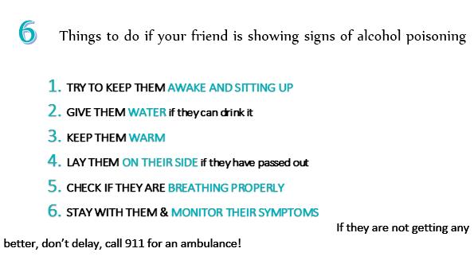

PROtect yourself.
It’s a good idea to drink plenty of water, especially while you are partying. You can do this by alternating your favourite beverage with water - this way you won’t get too dehydrated. That also means you won’t be as hung over the next day…that means no morning headache and you will make it to class like a PRO!
Foods like bread, cheese, potatoes and pasta work great (and are also delicious) - they line your stomach so you won’t end your night hugging the toilet
This way you party like a PRO without missing out on the fun. Each person’s limit may be different, but the average person shouldn’t drink more than 2 drinks in an hour to maintain your buzz. You may be approaching your limit if you are:
- Stumbling or staggering
- Blurry vision or blood shot eyes
- Slurred speech
- Poor hand-eye coordination
Not only will help you take smaller sips, but will also keep your drink nice and cold. Now you’re drinking like a PRO!
Drinking too much, too fast is dangerous. It also leads to being sloppy drunk…which nobody likes! If you can pace your drinking, and know when enough is enough, you can avoid doing things that you will regret later (like showing off those not so great dance moves) and will also help you avoid an epic hangover the next day.
It can have unpredictable effects, and can be seriously risky, especially if you mix alcohol with drugs like antidepressants or sleeping pills. Actually even over the counter drugs (i.e., allergy meds) can have negative effects when mixed with alcohol. But this doesn’t mean that you should skip your medication if you are planning to drink, as that can have harmful effects as well. Instead, check with your health care provider or pharmacist about the effects of combining your medication with alcohol to make sure you stay safe and healthy like a PRO!
Make sure you balance your social life with your responsibilities, like showing up to class and work. Choose times to drink when you don’t have other commitments. When party time is over don’t forget to take a break from boozing – set aside alcohol-free periods to help your body recover
PROtect your friends.
Taking care of yourself is important, but PRO’s also watch out for their friends. Here are some tips to keep your friends safe on a night out:
If you start the night together, make sure you keep checking in and that everybody makes it home safely. When you know where your friends are and who they are with, you can make sure they are partying like a PRO and getting home safe at the end of the night.
Don’t encourage your friends to drink more than they want to, or to the point where they get sloppy. Set limits ahead of time and help your friends stick to a good pace. Hey, you would want them to do the same for you!
Here are some signs that your friend might drinking too much and some tips about how to help them:
Sometimes being a good friend means ending your night early to walk your friend home and tuck them in. Just be careful they aren’t too drunk and in the danger zone for alcohol poisoning.
Know the signs of alcohol poisoning so you can help them like a PRO
What is alcohol poisoning?
When someone has alcohol poisoning their blood alcohol level has gotten so high that it is toxic (poisonous) to the body.
By recognising the signs of acute alcohol poisoning and knowing what to do, you could save someone’s life. Read more below so that you can help PROtect your friends.
Symptoms of alcohol poisoning to look out for:
Know what TO do
Know what NOT to do